सुविकल्प: Mine Repurposing Tool
Select factors and sub-factors to discover suitable repurposing options for your mining site
![Coal Controller Organisation emblem]()
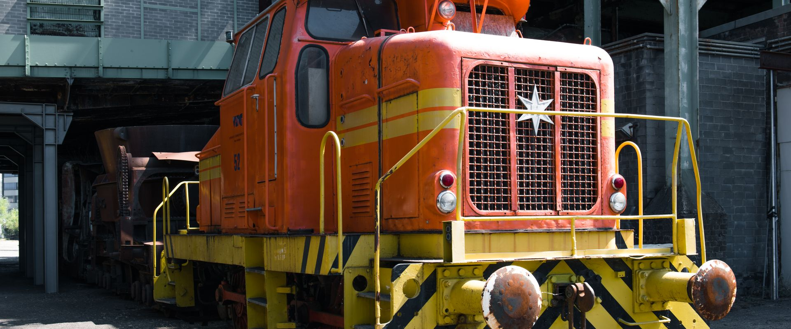
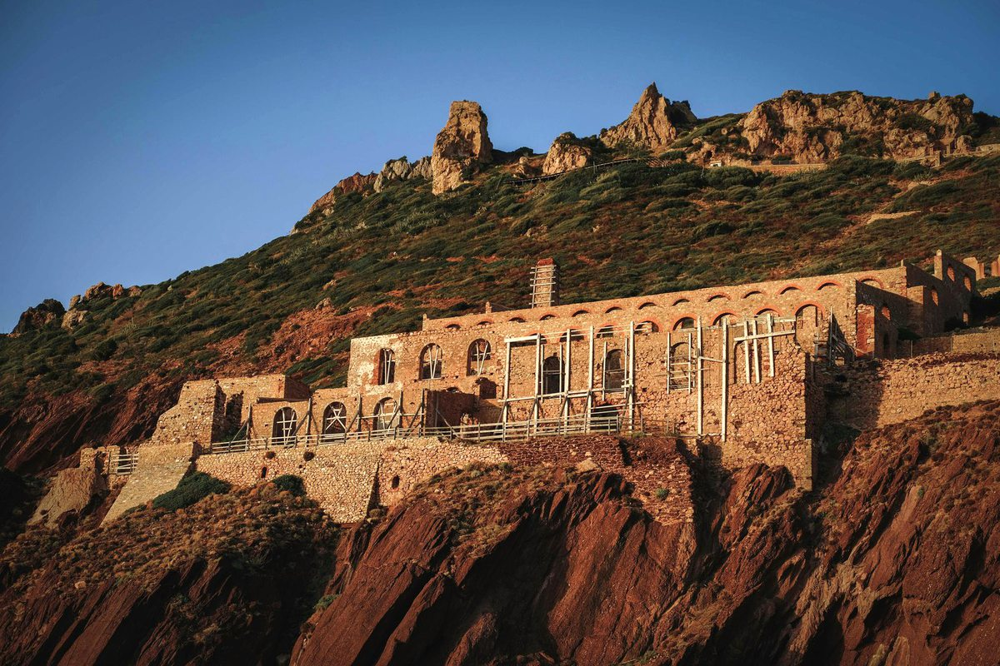
Strategic rationale, site suitability, and indicative scale for developing a Heritage Museum and Mining Interpretation Centre on closed coal mine land — preserving industrial heritage while generating tourism, education, and livelihood value.
A Heritage Museum and Mining Interpretation Centre converts a closed coal mine's physical infrastructure — headframes, engine houses, pit banks, winding gear, underground galleries, and spoil heaps — into a publicly accessible cultural and educational attraction. Unlike demolition, this repurposing preserves industrial identity while generating long-term tourism, education, and local employment value.
Global benchmarks include Big Pit National Coal Museum (Wales), Zollverein Coal Mine World Heritage Site (Germany), Wieliczka Salt Mine Heritage Complex (Poland), and Coalhurst and Crowsnest Pass museums in Canada. In the Indian context, the Coal Controller Organisation's mine repurposing mandate provides a direct policy basis for this use.
The following matrix provides a structured checklist for assessing the suitability of the proposed site for the selected repurposing option. It identifies the key physical, technical, environmental, infrastructure, legal, and owner-side readiness parameters that should be reviewed before the project is advanced to the next stage of development. The purpose of this matrix is to help the project owner understand existing site conditions, technical requirements, potential constraints, and preparatory actions required before feasibility studies, approvals, or tendering are initiated.
| Category | What to Assess / Prepare | Why It Matters | Owner-Side Readiness |
|---|---|---|---|
| Mine Infrastructure Inventory | Identify and condition-survey all structures: headframe, winding house, pithead baths, lamp room, office blocks, colliery railway, coal preparation plant remains | Heritage significance and structural reuse potential determines scope and cost of the museum | Condition survey, heritage significance grading, structural safety assessment |
| Underground Access Safety | Assess safety of at least one shaft or gallery for guided underground visitor access (ventilation, structural stability, fire egress) | Underground experience is the highest-value heritage offering; without it the museum is surface-only | Mine safety assessment, DGMS consultation, ventilation and egress study |
| Land Area and Zoning | Determine available land for surface exhibits, car parking, visitor centre, cafeteria, and landscaping (minimum 2–5 ha recommended) | Visitor flow, group handling, school visit capacity, and accessibility depend on surface footprint | Land title / leaseability confirmation; master plan concept |
| Road Access and Connectivity | Assess approach road quality, distance from nearest town or rail station, and potential for tourist bus access | Visitor numbers are directly correlated to accessibility; heritage sites with poor access rarely succeed commercially | Site connectivity assessment, estimated drive-time from major towns |
| Structure Safety and Stability | Structural integrity assessment of all proposed exhibit structures; mine workings and surface void risk assessment | Public safety is non-negotiable; subsidence, void collapse, and structural failure are the primary risks | Geotechnical survey, structural engineer's report, mine closure risk mapping |
| Water Management | Mine water inflow management for underground access zones; drainage plan for surface areas; waterproofing for underground galleries | Flooding is the main operational constraint for underground heritage access | Hydrogeological assessment, mine-water management plan |
| Heritage Documentation | Oral history recording, archival photograph collection, equipment cataloguing, community mapping of heritage significance | Content richness and authenticity determine visitor experience quality and repeat visits | Heritage documentation project; community engagement plan |
The following matrix presents an indicative relationship between available site area, project scale, technical configuration, and likely development potential. It is intended to support preliminary planning by helping the project owner identify the appropriate scale and configuration for the proposed repurposing option. The values and recommendations are indicative and should be refined through detailed feasibility studies, site surveys, engineering assessments, and relevant technical and commercial evaluations.
| Scale | Annual Visitors (est.) | Key Exhibits | Land Requirement | Staffing | Typical Context |
|---|---|---|---|---|---|
| Interpretation Trail | 5,000–20,000 | Signage, heritage trail, surface structures, viewing points | 1–2 ha | 5–10 staff | Small closed mine with limited infrastructure; low CAPEX option |
| Surface Heritage Museum | 20,000–80,000 | Visitor centre, equipment display, preserved buildings, indoor galleries, café | 2–5 ha | 15–30 staff | Mines with significant surface infrastructure; no underground access |
| Full Heritage Museum (surface + underground) | 80,000–300,000 | All of above + guided underground tours, replica coal face, miner safety demonstrations | 5–15 ha | 40–100 staff | Mines with safe accessible shafts/galleries; strong tourism catchment; Big Pit model |
| Mining Heritage Park | 300,000+ | Full museum + outdoor industrial landscape, amphitheatre, STEM centre, research archive, accommodation, regional anchor | 15–50 ha | 100–300 staff | Zollverein / large coal field region; UNESCO or national-level designation potential |
Implementation models, comparative assessment, and responsibility logic for Heritage Museum and Mining Interpretation Centre development on closed coal mine land.
The following table outlines the possible implementation models that may be considered for developing the proposed repurposing project. These models differ in terms of ownership structure, funding responsibility, private sector participation, operational control, and long-term risk allocation. The purpose of this table is to help the project owner compare broad development routes and select an implementation approach that aligns with its financial capacity, institutional preference, risk appetite, and long-term asset management objectives.
| Model | Overall Suitability | Comment |
|---|---|---|
| EPC | High | Mine owner builds the museum using a contractor and retains full ownership and operation. Best where owner has budget, institutional capacity, and a heritage mandate. Common for public-sector coal companies. |
| EPC + O&M | Very High | Owner builds via contractor, then contracts museum operations to a specialised heritage operator. Ideal when owner lacks tourism and curatorial expertise but has capital. Strongly recommended for PSU mine owners. |
| BOOT | Moderate | Developer builds and operates the museum for a fixed period, then transfers back. Suitable where private developers see commercial heritage tourism potential; less common for socially-motivated mine heritage projects. |
| BOO | Low | Developer builds and operates indefinitely with no transfer. Reduces owner's long-term control over heritage assets; not recommended for nationally significant mine heritage. |
| DBFOT | Moderate | Full PPP model with design, build, finance, and operate responsibilities on the private side. Viable for large-scale heritage parks with significant commercial tourism potential; complex procurement. |
| Concession / Lease-Develop-Operate | High | Owner leases land and structures to a heritage tourism developer or cultural trust for a defined period. Owner retains asset; lessee manages the museum. Good for organisations such as INTACH, state tourism boards, or cultural trusts. |
| Hybrid (Owner + Cultural Trust / NGO) | Very High | Mine owner retains ownership and provides infrastructure; a cultural trust, NGO, or state museum body manages operations, curates content, and accesses grants. Delivers highest authenticity and community benefit. Recommended primary model. |
The following comparative assessment evaluates the major implementation models across key decision parameters such as investment requirement, ownership control, financing responsibility, contractual complexity, risk transfer, and long-term economic benefit. This matrix is intended to support early-stage decision-making by highlighting the relative strengths and limitations of each model. The final choice of model should be guided by the specific circumstances of the project, including its scale, commercial viability, applicable policy framework, and the owner's institutional preference.
| Evaluation Parameter | EPC | EPC+O&M | BOOT | DBFOT | Concession | Hybrid |
|---|---|---|---|---|---|---|
| Upfront investment by Mine Owner | Very High | High | Low | Low | Low to Moderate | Low to Moderate |
| Ownership retained by Mine Owner | Full | Full | Temporary transfer | Partial | Full (land leased) | Full |
| Suitability for heritage preservation objective | High | Very High | Moderate | Low to Moderate | High | Very High |
| Suitability for local livelihood | Moderate | High | Moderate | Moderate | High | Very High |
| Revenue potential for owner | High (full revenue) | Moderate to High | Lease / concession fee | Concession fee | Lease rental | Shared / grant-supported |
| O&M burden on owner | Very High | Low (outsourced) | None during concession | None during concession | Low | Low (shared with partner) |
| Overall suitability for Heritage Museum | High | Very High | Moderate | Moderate | High | Very High |
The following table explains how major project responsibilities are typically allocated under different implementation models. It covers key functional areas such as site availability, financing, design and construction, regulatory approvals, operation and maintenance, revenue collection, asset ownership, and end-of-term transfer. This helps clarify the respective roles of the project owner, private developer, EPC contractor, operator, or concessionaire, and supports the preparation of tender documents and contractual structures.
| Activity | EPC / EPC+O&M | Concession / Hybrid |
|---|---|---|
| Heritage significance assessment and documentation | Mine Owner / appointed consultant | Mine Owner + Heritage partner (INTACH / Trust) |
| Structural repair and conservation of buildings | EPC Contractor (owner funded) | Shared: owner funds structure; partner funds fit-out |
| Underground access safety preparation | Mine Owner (DGMS-compliant) | Mine Owner retains safety responsibility |
| Exhibit design and curatorial content | O&M Agency / heritage consultant | Cultural trust / NGO / state museum body |
| Museum operations and visitor management | O&M Agency (contracted) | Concessionaire / heritage partner |
| Community engagement and oral history | Owner / CSR programme | Heritage partner / NGO |
| Grant and cultural fund applications | Owner | Heritage partner (primary applicant) |
| Revenue collection (admissions, cafeteria, shop) | O&M Agency on behalf of owner | Concessionaire (revenue shared with owner) |
| Long-term maintenance of structures | O&M Agency | Shared: structural — owner; operational — partner |
Heritage museum conversions draw on a blend of public funding, CSR contributions, and private-sector concession revenues. The investment model shapes who carries financial risk, who collects entrance and ancillary income, and how many local jobs are sustained long-term — making model selection central to financial viability and community benefit.
The following table presents the broad funding logic for each implementation model. It explains who is expected to finance the project, the level of owner-side funding requirement, and the commercial rationale behind each structure. This section is intended to help the project owner assess whether the project is more suitable for owner-funded development, private investment, public-private partnership, lease or concession structure, or a hybrid funding arrangement.
| Model | Funding Source | Owner Funding Requirement | Suitability for Heritage Museum |
|---|---|---|---|
| EPC | Owner equity + debt (100% owner-funded) | Very High — full CAPEX on owner's balance sheet | Low — mine owner must arrange full capital; high financial risk for cultural asset with uncertain revenue ramp-up |
| EPC + O&M | Owner funds construction; O&M agency charges annual management fee | High — full CAPEX plus recurring O&M contract payments | Moderate — owner retains all revenues but bears full upfront cost and operational risk |
| BOOT | Developer brings full finance; mine owner contributes land | Low — land or building as in-kind contribution only | High — private sector funds build and operates during concession; owner receives land rent or revenue share; asset transfers at end |
| BOO | Developer brings full finance; no transfer obligation to owner | Nil to Low — owner provides land/structure | Moderate — developer retains asset in perpetuity; best where owner cannot fund but risks losing heritage asset ownership permanently |
| DBFOT | Developer designs, builds, finances and operates; grants (VGF) if revenue gap exists; transfers at concession end | Low to Moderate — VGF support if required; land in-kind | Very High — preferred PPP model; owner retains land title, receives concession fee, gets asset on transfer |
| Concession / Lease | Operator revenue from ticket, F&B, retail, events; mine owner receives concession fee per deed | Low — land/building in-kind; conservation CAPEX may be owner-funded separately | High — best for operational phase; construction funded through prior grant or separate EPC contract |
| Hybrid | Public funds (government grant, CSR, CIL/NMDC corpus) for conservation; private developer for fit-out and operations | Moderate — conservation CAPEX from public/owner side; fit-out and ops funded by private partner | Very High — aligns statutory cultural preservation obligation with private operational efficiency; recommended for coal mine heritage sites |
The following table explains how revenue may be generated under different implementation models and identifies who is likely to receive the principal project income. It also describes the nature and extent of the financial benefit available to the project owner, whether through direct project revenue, cost savings, lease income, concession fees, revenue sharing, service charges, or eventual asset transfer. This comparison is intended to support the selection of a commercially appropriate model for the proposed repurposing project.
| Model | How Revenue is Generated | Who Receives Revenue | Owner's Financial Benefit |
|---|---|---|---|
| EPC | Ticket sales, guided tours, events, retail, F&B — all owned by mine owner post-construction | Mine Owner (100%) | Full gross revenue minus O&M cost — highest potential but owner bears all operational risk |
| EPC + O&M | Same revenue streams; O&M agency manages operations under fee contract | Mine Owner after deducting O&M fee | Net revenue = gross minus annual O&M management fee; predictable cost structure |
| BOOT | Developer collects all revenues during concession period; mine owner receives land annuity/rent | Developer during concession; Mine Owner at transfer | Stable annual annuity during concession; full revenue ownership post-transfer of operational asset |
| DBFOT | Developer collects revenues over concession life; mine owner may receive revenue share or annuity | Developer during concession; Mine Owner post-transfer | Concession fee or revenue share; VGF if revenue not self-sustaining; asset reverts to owner |
| Concession / Lease | Operator collects revenues; shares percentage with mine owner per concession deed | Shared — Operator keeps operating surplus; Mine Owner receives concession fee or revenue % | Predictable, low-risk income stream; owner not exposed to day-to-day operational volatility |
| Hybrid | Private partner collects operational revenues (tickets, retail, events); public/conservation side is grant-funded | Shared — Private partner retains operational surplus; Mine Owner receives agreed revenue share | Revenue share from private operations; public/conservation investment recovered through grants, not revenue |
The following table assesses the likely local livelihood and employment potential of each implementation model. It considers the extent to which each model can support construction-phase jobs, long-term operational employment, local procurement opportunities, skill development, community participation, and associated support services. This section is particularly relevant where the repurposing project is expected to contribute to post-mining or post-operational economic transition and sustained local community benefit.
| Model | Local Job Potential | Why | Overall Suitability for Local Livelihood |
|---|---|---|---|
| EPC | Moderate | Construction employment only; no long-term jobs mandated by contract structure | Moderate — temporary benefit during construction phase only |
| EPC + O&M | Moderate–High | O&M agency can be mandated via contract to hire locally for guide, security, housekeeping, and ticketing roles | High — sustained employment if O&M contract includes local hiring clauses |
| BOOT | High | Developer operates for full concession period; local hiring reduces training costs and builds authentic heritage guide capacity | High — long concession period creates stable employment pipeline |
| BOO | Moderate | No transfer pressure; developer may outsource to reduce cost; local employment not guaranteed without contractual mandate | Moderate — dependent on RFP conditions and developer culture |
| DBFOT | High | Long concession; RFP can mandate local employment percentage; developer incentivised to retain reliable local staff | High — structured local employment mandate achievable at bid stage |
| Concession / Lease | Very High | Concession deed can explicitly include SHG integration as heritage guides, community F&B operators, and craft vendors | Very High — most direct local ownership of tourism operations |
| Hybrid | Very High | Public-side mandate for SHG and FPO involvement in conservation and operations; private partner incentivised to hire locally for authentic visitor experience | Very High — Most Suitable; combines mandated community inclusion with private operational efficiency |
The following combined comparison brings together three important dimensions of project structuring: revenue potential, owner-side financial benefit, and local livelihood generation. It provides a consolidated view of how each implementation model performs across commercial, institutional, and community-development perspectives. This matrix is intended to support balanced decision-making where the objective extends beyond financial return to include sustainable site reuse and long-term local economic benefit.
The following table assesses the likely local livelihood and employment potential of each implementation model. It considers the extent to which each model can support construction-phase jobs, long-term operational employment, local procurement opportunities, skill development, community participation, and associated support services. This section is particularly relevant where the repurposing project is expected to contribute to post-mining or post-operational economic transition and sustained local community benefit.
| Model | Revenue Potential for Owner | Financial Sustainability | Local Livelihood Impact | Recommended Use Case |
|---|---|---|---|---|
| EPC | High (if museum performs) | Low — owner bears full risk | Moderate | Large CIL/SCCL sites with guaranteed footfall and own capital |
| EPC + O&M | High (net of O&M fee) | Moderate — cost-predictable but revenue uncertain | High (if mandated) | Owner with capital but lacking operational expertise |
| BOOT | Annuity during concession | High — risk transferred to developer | High | Sites with proven visitor demand but owner lacks CAPEX |
| BOO | Annuity or one-time premium | High — risk transferred permanently | Moderate | Avoid for heritage assets; use only for peripheral infrastructure |
| DBFOT | Revenue share + asset at transfer | Very High — structured risk allocation | High | Large museums (80k+ visitors/year) with long-term cultural value |
| Concession / Lease | Concession fee (modest but stable) | High — operational risk on operator | Very High | Smaller interpretation trails and surface museums with community operator model |
| Hybrid | Revenue share (moderate) | Very High — public funds de-risk conservation | Very High | Most suitable overall — coal mine heritage sites with statutory preservation obligations and community transition goals |
Converting a closed coal mine into a heritage museum requires significant pre-RFP groundwork on documentation, structural safety, heritage protection, and visitor feasibility. Post-award, the selected developer or operator takes forward design, conservation, and operational matters under contractual obligation to the mine owner.
The following section identifies the key owner-side preparatory actions that should ideally be completed before issuing the first Request for Proposal. These actions are aimed at reducing uncertainty for prospective bidders, improving project bankability, clarifying site availability, identifying approval pathways and risks, and defining the technical and commercial scope of the project. Completing these preparatory steps before tendering can improve bid quality, attract credible responses, and reduce the risk of delays during project implementation.
Before issuing an RFP for a Heritage Museum-based mine repurposing project, the mine owner should prepare the following in priority order:
The following section lists the principal activities that may be undertaken by the selected contractor, developer, concessionaire, operator, or implementation agency after award of the project. These activities generally include detailed site investigations, engineering design, statutory submissions and approvals, equipment procurement, construction, commissioning, operational planning, staff training, and performance monitoring. The distinction between pre-RFP owner preparedness and post-award implementation responsibilities helps ensure an appropriate and efficient allocation of effort across the project development cycle.
After award, the selected concessionaire / contractor / O&M agency / museum operator can take up the following activities in chronological order:
The following implementation pathway presents a practical high-level sequence for advancing the proposed repurposing concept from initial approval through to project execution and long-term operation. It outlines the broad stages of concept approval, preliminary studies, model selection, bid preparation, procurement, detailed design, statutory approvals, construction, commissioning, and ongoing operation. This pathway is indicative and should be adapted to reflect the specific complexity, regulatory requirements, financing structure, and site conditions applicable to the project.
The Way Forward for heritage museum development on closed coal mine land centres on choosing a model that preserves cultural assets, attracts private operational expertise, and sustains local employment over the long term. This panel sets out the recommended model ranking, key references for practitioners, and a glossary of terms used across the PRISM framework.
The following way forward summarizes the preferred development approach for the proposed repurposing option, based on the assessment presented in PRISM (Post Mining Repurposing Implementation and Strategy Models). It identifies the most suitable implementation models in order of preference, highlights key technical and due-diligence considerations, and outlines the recommended next steps and broad development logic. This section is intended to guide internal decision-making and support the project owner in progressing from concept-stage evaluation toward feasibility assessment, project structuring, regulatory approvals, and implementation planning.
Preferred Models, in order: (1) Hybrid Model, (2) Concession / Lease-Develop-Operate, (3) DBFOT
Why preferred: Hybrid is preferred because mine heritage requires narrative control, authenticity, public access and professional museum operation. The hybrid mix should include owner-controlled heritage assets + museum / conservation expert + private visitor-service operator + ex-miner / community storytelling participation.
Secondary option: EPC + O&M is suitable where the owner wants full control over heritage interpretation, collections, pricing and public access.
Suggestable technical care: Structure safety, collection conservation, visitor circulation, fire safety, accessibility, interpretation design, digital displays, archival protection and community inclusion must be planned.
Recommended development logic: Begin with equipment display, photo archive, guided tours and interpretation centre. Later add immersive digital exhibits, café, retail, school programmes and mine-heritage trails.
Disclaimer — All repurposing interventions proposed under P.R.I.S.M. shall remain subject to applicable mining laws, land-use regulations, environmental approvals, mine-closure conditions, forest and biodiversity regulations, groundwater permissions, and any other statutory approvals as may be applicable. Land ownership is proposed to remain with the mine owner / competent authority unless otherwise permitted under applicable law.
| Abbreviation | Full Form |
|---|---|
| AV | Audio-Visual |
| BOO | Build, Own, Operate |
| BOOT | Build, Own, Operate, Transfer |
| CAPEX | Capital Expenditure |
| CCO | Coal Controller Organisation |
| CIL | Coal India Limited |
| CMP | Conservation Management Plan |
| CSR | Corporate Social Responsibility |
| DBFOT | Design, Build, Finance, Operate, Transfer |
| DPR | Detailed Project Report |
| EPC | Engineering, Procurement and Construction |
| ESG | Environmental, Social and Governance |
| FPO | Farmer Producer Organization |
| HSA | Heritage Significance Assessment |
| INTACH | Indian National Trust for Art and Cultural Heritage |
| NGO | Non-Governmental Organization |
| O&M | Operation and Maintenance |
| PMU | Project Management Unit |
| PPP | Public-Private Partnership |
| RFP | Request for Proposal |
| SCCL | Singareni Collieries Company Limited |
| SHG | Self-Help Group |
| TICCIH | The International Committee for the Conservation of Industrial Heritage |
| UNESCO | United Nations Educational, Scientific and Cultural Organisation |
| VGF | Viability Gap Funding |
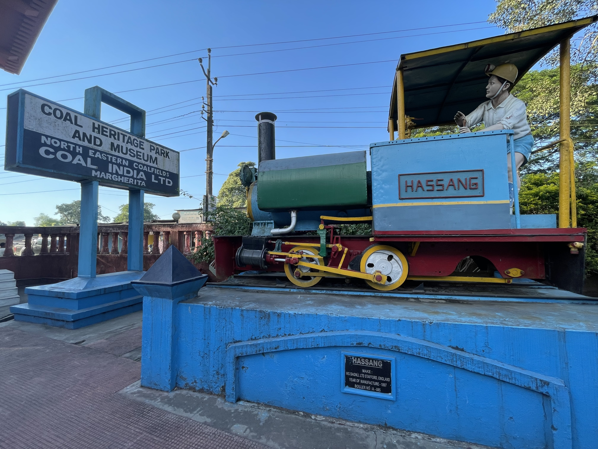
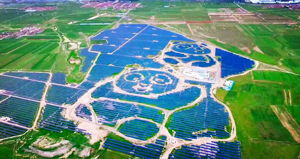

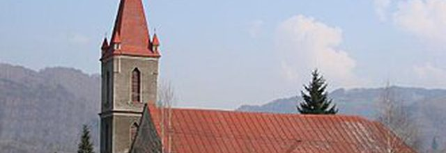
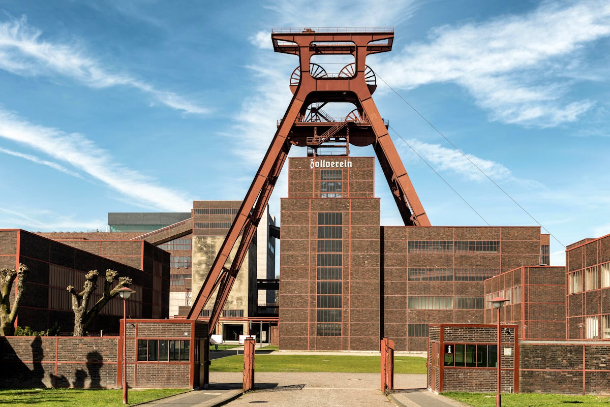
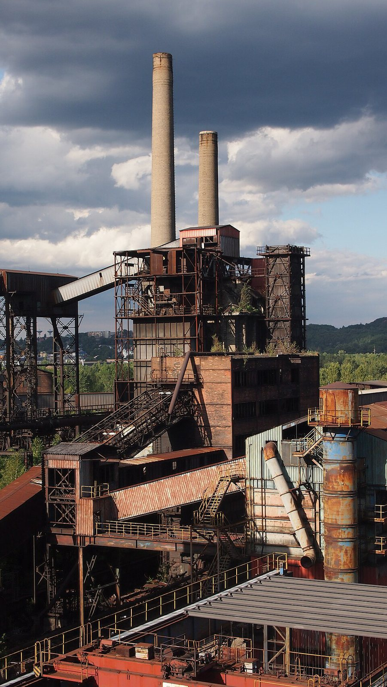
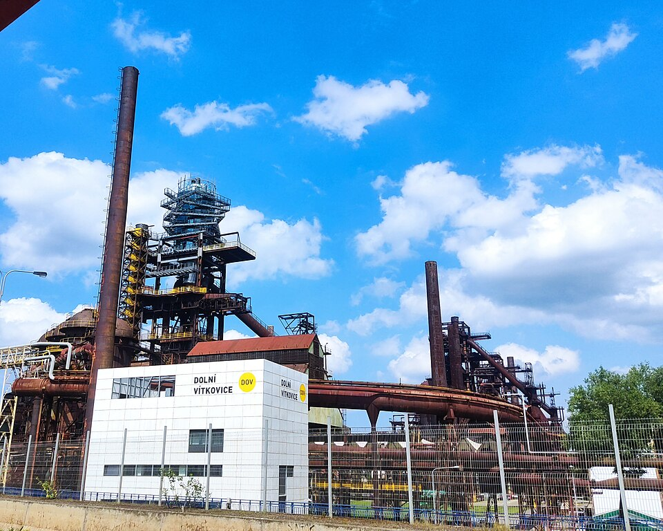
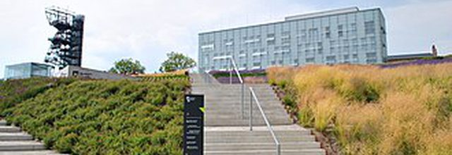
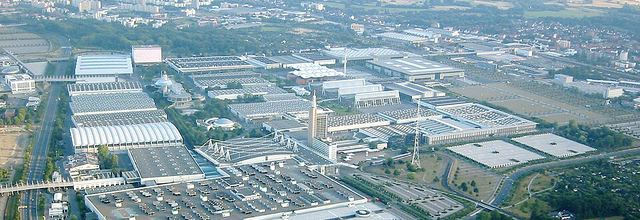
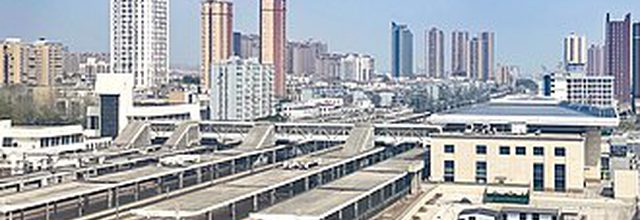

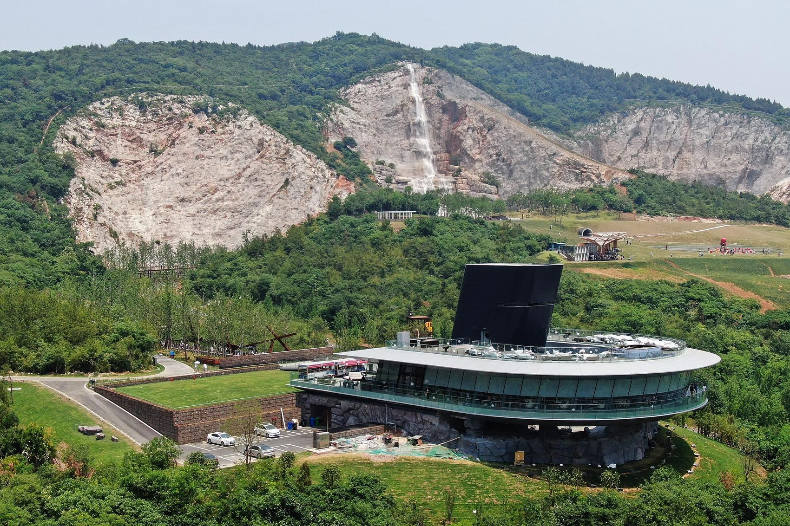
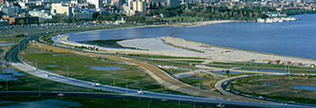
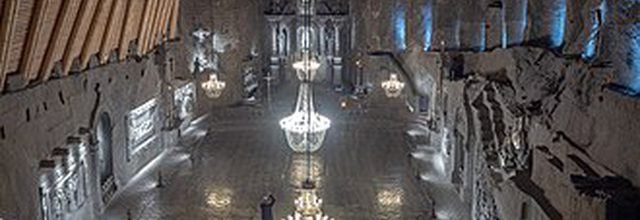
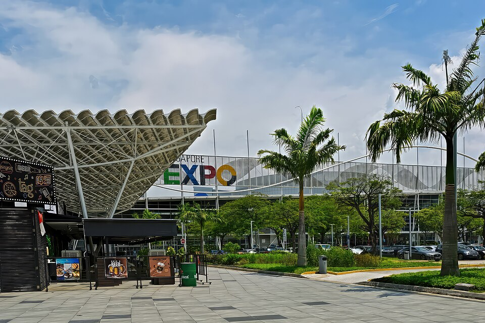
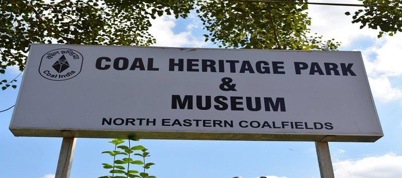
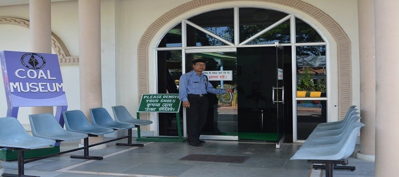
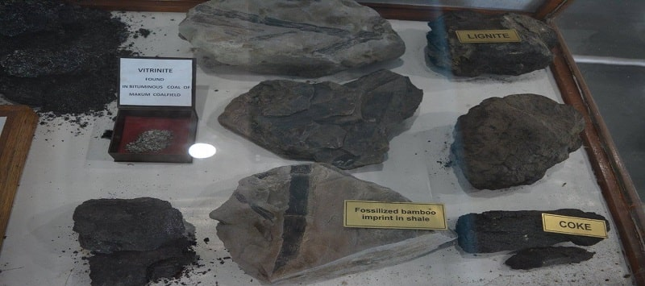
Links open external websites. Coal Controller Organisation does not endorse third-party content.


Disclaimer: Inclusion of an agency on this list does not constitute endorsement, empanelment, or recommendation by the Coal Controller Organisation or the Ministry of Coal, Government of India. Mine owners and project proponents are advised to conduct their own due diligence process before engaging any agency.
Disclaimer: Inclusion of an expert does not constitute endorsement, empanelment, or recommendation by the Coal Controller Organisation or the Ministry of Coal, Government of India. Users are advised to independently verify credentials and suitability before engaging any individual.